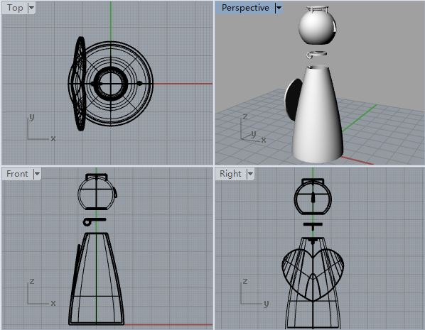

Doucments on the third week:
The work flow by design a 3D printing product:
1. Using Rhino...... 3D desgin software to desgin the 3D model
2. Slicing (Slic3r, Cura, Makerbot Print[xyz ware]) Make the material in the different slices, which denotes the printer to print.
3. Send the Gcode to the printer and WAIT......
Some attentions that has to be paid to the printer:
1. The holding structure has to be considered ot there are something that will be hanging on the product.
2. The thickness of the wall is no less than the nozzle size, which is 0.4mm in this 3D printer.
3. The minimal gap of the seperation between moving parts has to be no less that the nozzle size, which is 0.4mm in this 3D printer.
4. The overhang angle is usually no less than 45 degree, or the parts will fall during the process of printing.
5. Take care of the bridging distance. the bridge will look loke this if it is too long.
Evaluating the test model：
First, here is the test model which was design by the teacher
By checking the test model, there are a little things that needs to be take care of for this specific typf of xyz Printer:
1. There is not evident polygons on the surface of the half sphere. But the layer height is really a great factor that affect the final bueaty of the product.
2. The overhang is quite better than what we had expected, the 30 degree part stays fine and there is no falling-downs. But it might because that there is another parts beside it and help the printer print it well.
3. The bridge sorked just fine, but there is a little flaw right beneath the longest bridge.
4. For the thinest wall, 0.4mm doesn't work very well. on the edge of the wall, the printer doesn't seem let out enough material.
So these are what needs to be paying more attentions to.
Desgin my own 3D model:
By thinking what kind of model to desgin, it really showed that creativity is no an easy thing. Luckily, I found the need from my vibiration speaker.
It can attach to almost anything in order to generate a loud voice, but I want to give it a fixed tool for its eternal 'thing'. This one is simple and the print file is also easy to make
By the way, I found that "solid"-->"excursion" is a good method to transform a hook face into a solid, just like what I build the "bowl". However, the product doesn't seems really good.
It is too small and is not able to attach to the vibiration speaker.
Also, in order to print faster, I chose the layer height as 0.3mm. The overhang angle is too low for the upper layer to connect to each other.
During the process, an idea sudden came up to me. Why don't I make a small idol which is just like the one I brought from U.S.?

Then, I started making
First, I desgined all parts of the small statue. Also, I add a little feature so that the head can be opened, and I can put some amazing thing in it. But it could be too difficult for the printer, I made a simpler model whose head cannot be opened.
Also, I made a model for the best senario, which has the full function by the desgin. As you can see, there is a little different in the neck of the idol.
The settings for the printer are as follows:
Then I print the two plans together, in order to save some time and the machine.
Unluckily, the product didn't come out as I had expected. The head of the best senario plan cannot be open, and the ring over the head was a mess, since what on the simple plan is a little better than that. Also, I thought the wings for this idol is still a little too big. And I redesgin the product and choose to print the head and the body seperately, and glue them together.
And hoping the product will look like this.